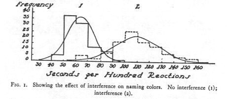
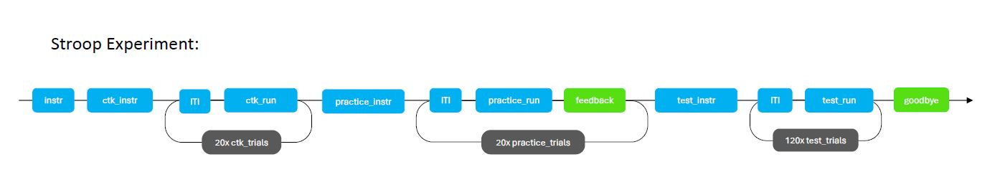

5 Stroop Paradigma
Programmieren eines klassischen neuropsychologischen Tests mit PsychoPy.
6 Stroop Task
Der Stroop Task wurde 1935 zum ersten Mal beschrieben (Stroop, 1935) und ist einer der meist zitierten und verwendeten neuropsychologischen Aufgaben (MacLeod, 1991). In der Neuropsychologie wird der Stroop Color and Word Test (SCWT) verwendet, um die Fähigkeit zur Inhibition kognitiver Interferenz zu messen, welche entsteht wenn zwei Stimuluseigenschaften gleichzeitig verarbeitet werden sich aber widersprechen (Scarpina & Tagini, 2017). Teilweise misst der Task auch andere kognitive Funktionen, wie visuelle Suche oder Arbeitsgedächtnis, weshalb der Vergleich von Bedingungen relevant ist (Periáñez et al., 2021).
Während dem Stroop Task wird ein Text mit Farbwörtern präsentiert. Im kongruenten Durchgang entsprechen die Farben des Textes dem Farbwort (das Wort “rot” wird in rot präsentiert), im inkongruenten Durchgang unterscheiden sich die Farben des Textes vom Farbwort (das Wort “rot” wird in gelber Farbe präsentiert). Die Person muss angeben in welcher Farbe das Wort abgedruckt ist. In der kongruenten Bedingung fällt dies leichter, weil das gelesene Wort auch der Farbe entspricht. In der inkongruenten Bedingung verlangsamt sich die Geschwindigkeit durch die entstehende Interferenz von Wort und Farbe, da das Wort automatisch gelesen wird. Oft wird auch noch eine neutrale Bedingung verwendet, wo nur die Farbe oder das Wort präsentiert werden.

Hier finden Sie eine englische Online-Version eines Stroop Tasks.
Testen Sie die Demo und diskutieren Sie dann in kleinen Gruppen folgende Fragen:
Für welche neurowissenschaftlichen Forschungsfragen eignet sich dieser Task? Mit welchen weiteren Methoden (fMRI, EEG, Hirnstimulation, etc.) liesse er sich kombinieren und was könnte man dabei lernen? Welche Patientengruppen zeigen auffällige Antworten in diesem Task?
Welche “Elemente” des Experiments konnten Sie identifizieren?
Welche Stimuluseigenschaften sind relevant für das Experiment? Was macht die Aufgabe einfach? Was macht sie schwieriger?
Welche Antwortmöglichkeiten haben die Versuchspersonen?
Welche Bedingungen würden Sie vergleichen?
Welche Stimuluseigenschaften sind wichtig, damit Sie die Resultate nicht verfälschen oder auf was muss geachtet werden bei der Stimulusauswahl?
Was denken Sie, misst der Task was er soll? Wie werden die Verhaltensdaten Ihrer Schätzung nach aussehen?
[~10 Minuten]
6.1 Kurzbeschrieb Kursexperiment
In diesem Experiment lösen die Personen zwei Bedingungen des Stroop Task, einmal geben sie die Farben der Wörter an in einer kongruenten Bedingung (Wortinhalt und Wortfarbe) stimmen überein. Einmal lösen sie die Aufgabe in einer inkongruenten Bedingung (Wortinhalt und Wortfarbe stimmen nicht überein).
Die kongruente und inkongruente Bedingung kommen im selben Block vor. Die Instruktion lautet für beide Bedingungen gleich, da immer die Wortfarbe angegeben werden muss. Drei Farben werden verwendet: rot, blau und gelb.
Das Stroop Kursexperiment ist folgendermassen aufgebaut:

Laden Sie das Experiment herunter und testen Sie, ob es auf Ihrem Laptop läuft. Hier finden Sie die Anweisungen dazu.
Testen Sie, ob das Experiment startet und ob die Übungstrials funktionieren. Kontrollieren Sie, ob es ein Datenfile abgespeichert hat und schauen Sie, ob dieses Datenfile alles Relevante enthält. Wenn alles ok ist, ist das Experiment bereit für Übung 1. Führen Sie die Testungen ausserhalb des Computerlabs durch.
Beantworten Sie folgende Fragen zum Experiment:
Was wurde im Experiment variiert? Wie viele unterschiedliche Trials gibt es?
Welche Bedingungen gibt es?
Wieviele Trials werden pro Bedingung durchgeführt?
Wie lange wird der Wort-Stimulus angezeigt? Wann ist er fertig (zeit oder tasten-definiert?)?
Wie denken Sie, wird sich das Verhalten (Reaktionszeit, Richtigkeit) zwischen den Bedingungen unterscheiden?
6.2 Credits
Dieses Experiment wurde von Rebekka Borer programmiert.
6.3 Referenzen
MacLeod C. M. (1991). Half a century of research on the Stroop effect: an integrative review. Psychological Bulletin. 109(2), 163–203. https://doi.org/10.1037/0033-2909.109.2.163
Periáñez, J. A., Lubrini, G., García-Gutiérrez, A., & Ríos-Lago, M. (2021). Construct validity of the stroop color-word test: influence of speed of visual search, verbal fluency, working memory, cognitive flexibility, and conflict monitoring. Archives of Clinical Neuropsychology, 36(1), 99-111. https://doi.org/10.1093/arclin/acaa034
Scarpina, F., & Tagini, S. (2017). The stroop color and word test. Frontiers in psychology, 8, 557. https://doi.org/10.3389/fpsyg.2017.00557
Stroop, J. R. (1935). Studies of interference in serial verbal reactions. Journal of Experimental Psychology, 18(6), 643–662. https://doi.org/10.1037/